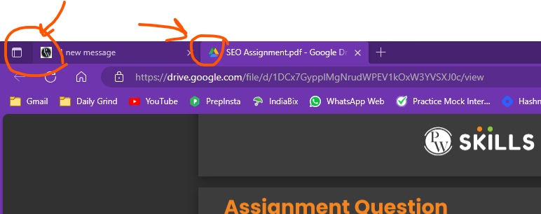

Question. Define favicon and give an illustrative example.
Answer. A favicon, short for "favorite icon," is a small, typically square image or icon that is associated with a website or webpage. It is displayed in various places, such as in the web browser's address bar, next to the webpage's title in browser tabs, and when users bookmark or save a webpage to their favorites or bookmarks list. Favicons are used for branding and to provide a visual identifier for a website.
Example of Favicon
